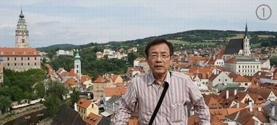
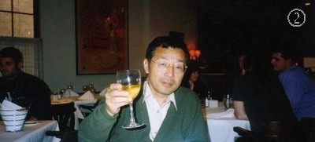
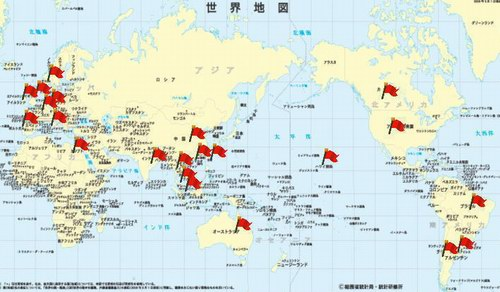
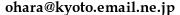

2021/05/19更新
長年勤めていた会社を、２００２年１０月に早期退職し、その後は、インターネット環境さえあれば、南の島でもホテルでも、どこでも、幾つになっても仕事ができるをコンセプトに、自分でＷＥＢサイトを立ち上げ調査関連の事業を始めました。２０１３年、諸事情によりこの事業を廃止し、現在はインターネットで、どこでも１日２４時間取引ができる外国為替取引を趣味として行っています。また、2014年からはスポーツクラブに週３回通うなど健康にも留意しています。((自己紹介))
【誕生】 １９４７年 岡山県岡山市生まれ
|
  |
（撮影時期） ① 2015年東欧チェコ旅行中 ② 2000年カナダ・バンクーバー旅行中 ③ 1996年ドイツ・ハンブルグ駐在中 ④ 1985年米国・ミネアポリス語学留学中 ⑤ 1972年京都、エレクトーン発表会 ⑥ 1964年岡山市、高校生 ⑦ 1955年?岡山市、小学生 |
【趣味】 中国語カラオケ、中国語、パソコン、プログラミング、株、外国為替取引、ゴルフ練習、カメラ、筋肉トレーニング、社交ダンス
（過去の趣味： 空手、オーディオ、二輪車、クレー射撃、社交ダンス、エレクトーン、ドライブ、アマチュア無線、ゴルフ）
【職歴】 大手電機メーカで、紙・布等の傷を検出する探傷装置の研究開発、米国で開発したＣＲＴディスプレの国産化、流通システム機器の商品開発・システム開発などを行っていました。 １９９５年からはドイツ・ハンブルグへ２年駐在、その後中国上海へ２年駐在し、２０００年からは米国デンバーへ約半年駐在し米国ソフト会社と協力し日本の大手流通業へ新システムの開発・導入などをしておりました。
【海外歴】 仕事の関係上多くの国を訪問 （詳細はこちらを参照してください）、

【連絡先】 E-mail address:

（主な出来事、海外で購入したお土産）
***** [続き] *****